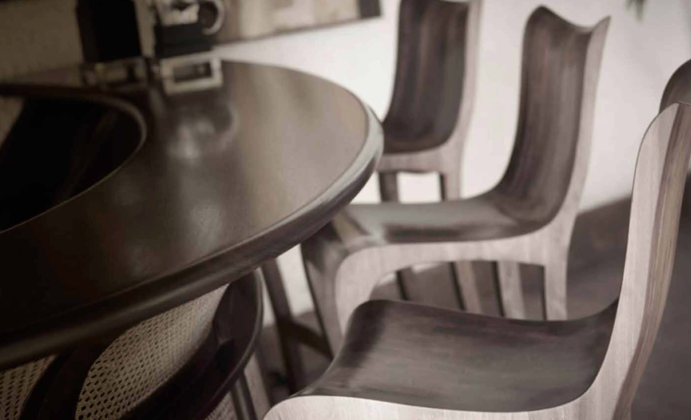
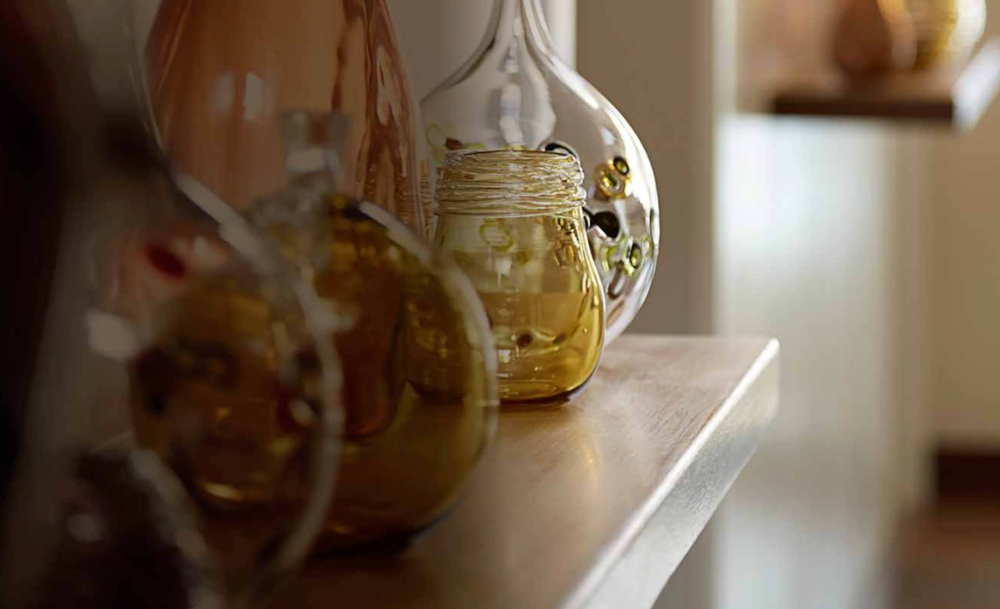

- 

- 


“Elements of traditional techniques and patterns, handcrafted timberwork and beautiful objects from the past have been used in combination with contemporary, fresh colors to create the sense of heritage these clients were looking for. The spaces in this home feel elegant, rich and precious, but also warm and welcoming due to the solid timber doors, floors and joineries, all of which were made by Kenyan craftsmen.”